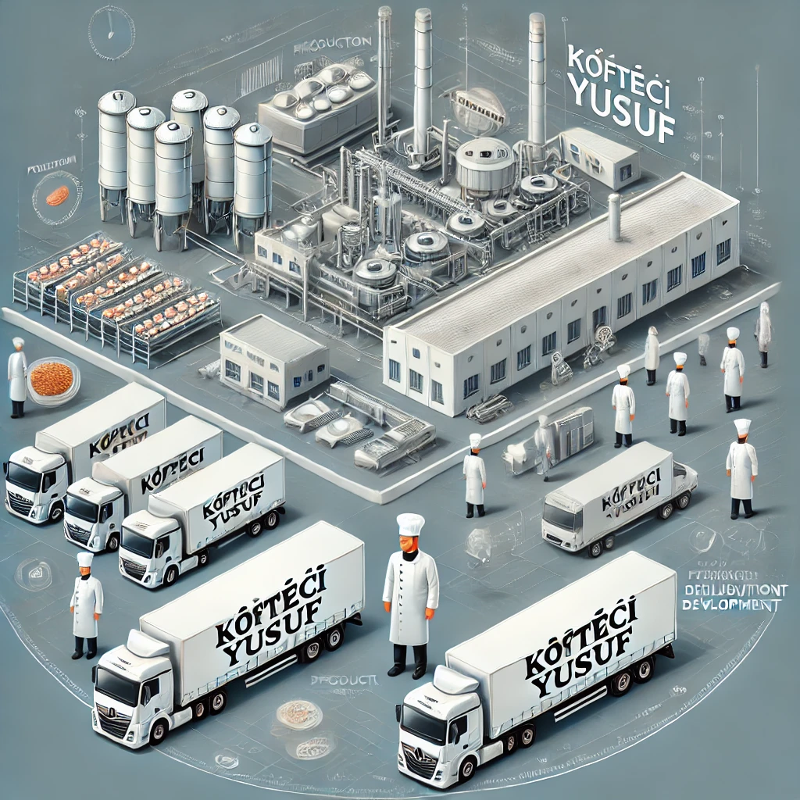

1. Restoran Genişleme Projeleri
Köfteci Yusuf olarak, Türkiye'nin her köşesinde lezzetlerimizi daha fazla insanla buluşturmak için şube ağımızı sürekli genişletiyoruz. Şu anda Türkiye genelinde 500’den fazla şubemiz bulunmakta ve her yıl bu sayıyı artırmak için çalışıyoruz. Ayrıca, uluslararası alanda Türk mutfağını tanıtmak için yurt dışı şubeleşme projelerimize hızla devam ediyoruz. Dubai, Almanya ve diğer Avrupa ülkelerinde yeni şubeler açmayı hedefliyoruz.
2. Üretim ve Lojistik Geliştirme
Müşterilerimize en taze ve doğal ürünleri sunabilmek adına, modern teknolojiyle donatılmış üretim tesislerimizi kurduk. Kendi et işleme tesislerimizde yüksek hijyen standartları ve kalite kontrol süreçleri ile köftelerimizi üretiyoruz. Ayrıca, lojistik ağımızı geliştirerek ürünlerimizi hızlı ve güvenilir bir şekilde tüm şubelerimize ulaştırıyoruz.
3. Sosyal Sorumluluk Projeleri

Köfteci Yusuf olarak, topluma katkı sağlamayı en önemli görevlerimizden biri görüyoruz. Eğitim projelerine destek vererek gençlere burs imkânları sağlıyor, yıl boyunca düzenlediğimiz bağış kampanyalarıyla ihtiyaç sahibi ailelere gıda yardımı ulaştırıyoruz. Ayrıca, yerel üreticilerden malzeme temin ederek ülkemizin tarım ve hayvancılık sektörüne katkı sağlıyor ve çevreye duyarlı atık yönetimi politikalarımızla sürdürülebilir bir geleceğe katkıda bulunuyoruz. Her zaman toplumsal dayanışmayı ve yardımlaşmayı önceliklerimiz arasında tutarak değer yaratmaya devam ediyoruz.